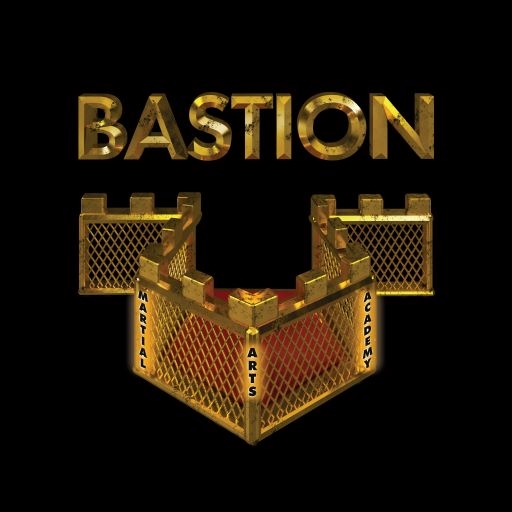

Z przyjemnoci pragniemy poinformowa ze w najbli偶sza sobot 14.05. W Sochaczewie na Mistrzostwach Polski MMA zobaczymy 5 naszych zawodników, którzy reprezentowa bd barwy naszego klubu oraz Bechatowa Trzymajcie wraz z nami za nich kciuki !!!

Akademia sztuk walk Bastion to miejsce które oferuje profesjonalne treningi i kompleksow opiek na ka偶dym poziomie zaawansowania. Podczas ka偶dego z treningów pracujemy nad zwikszaniem Twojej wytrzymaoci fizycznej jak i odpornoci psychicznej
Oferujemy Ci treningi pene pasji i zaanga偶owania : - treningi indywidulne , podczas których bdziesz uczy si i doskonali dokadnie w tych technikach na których najbardziej Ci zale偶y - ogólnorozwojowe treningi bokserskie dla najmodszych ( ju偶 od 5 roku 偶ycia) - treningi grupowe dla dorosych w formule MMA ( grupa pocztkujca i zawodnicza ) - treningi grupowe dla dorosych w formule bokserskiej ( grupa pocztkujca i zawodnicza) - crossfit / zajcia obwodowe dla kobiet i m偶czyzn zwikszajce wydolno, si fizyczn i wytrzymao. Naszym zawodnikom oferujemy : - seminaria, obozy treningowe, treningi wyjazdowe w klubach partnerskich , opiek psychologa Sprawd藕 w czym Ty jeste najlepszy ! PRZYJDŹ -> ZAUFAJ -> ZWYCIĘŻAJ !!!
Autor strony: Bartomiej Siewiera